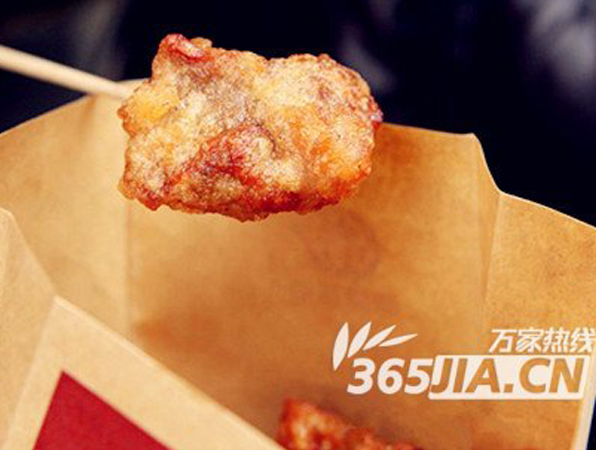

桥头排骨
1912街区中国国际影城正对面就有一家桥头排骨小店，一遍逛街一遍啃排骨，想想就霸气。
桥头排骨其实就是炸的排骨，炸好后外焦里嫩，金灿灿的。排骨从油里捞出来以后，可以撒上黑胡椒，孜然，梅子粉或者辣粉。十几块钱1份，连骨头带肉，有嚼头，啃起来相当过瘾，不过也有挑剔的食客表示，性价比不高，排骨走在路上吃也有点不太矜持，这样的排骨在家里的话，既卫生，量又大。总而言之，全看个人喜好。
边逛街边啃排骨感觉不错
桥头排骨看似简单，据说要想做出美味无敌的炸排骨，就需要在下锅之前，对排骨进行一个时间段的腌制，这样才会让排骨入味，吃起来才会美味。如果没有经过腌制的排骨就算你在外皮下多少的盐，都是无法入味到内，到“骨髓”里的。好吧，有兴趣的可以在家里试下自己做，兴许别有一番风味。
桥头排骨还是有着它的起源的：
明朝洪武十四年(公元1381年)，中山王桥头奉太祖朱元璋之命修建山海关。一天，桥头登上秦王岛(今秦皇岛市区，当时秦皇岛是一个四面环水但靠近陆地的海岛)考察地形。因秦皇岛地处辽西走廊，是华北通向东北的咽喉要冲，也是关里和关外各民族文化和贸易交汇的重要地区。因此，岛上码头船舶人流往来繁华 。
桥头兴致勃勃带领随从四处逛游，不觉间来到一河边桥头。微风吹来，阵阵飘香扑鼻，大家顿觉食欲难耐，闻香寻去，但见桥头檐下有一简陋木棚， 香味从内传来，入内再看，内有一妇人正在炸肉、炸排骨，有俩少儿在侧辅助。桥头忙命人买来些坐下就吃，顿时香味四溢，连连称赞!食后手指留香，越吃越爱吃，不觉已连吃几斤，仍意犹未尽。于是喊来妇人问话。妇人道，原是后元官宦人家，因战乱元灭，家人离散，不得已自身携子逃难到此。原在官邸时跟家厨学过炸肉秘方，如今凭此以卖炸肉为生。桥头道，你原乃大户妇人，现却能炸肉为生养育子女，甚为难得，令人敬佩。于是命人去取笔墨，写下：桥头排骨，美誉山海，赠与妇人，成为一段佳话。
如今，桥头排骨经代代相传至今，已成为秦皇岛经久不衰的地方名吃。“留恋桥头非美景，一块排骨成佳话”就是对桥头排骨之美誉！
桥头排骨的口味很多，有香辣、孜然、甘梅、椒盐、柠檬、松香、沙拉、番茄、日式烧汁九种特色口味，可任选其一。他们家的小吃还有不少，台湾大鸡排、台湾章鱼、脆皮玉米、大肠包小肠等，价格都不贵，夏天的傍晚，来点小吃，边走边吃，很是惬意。
